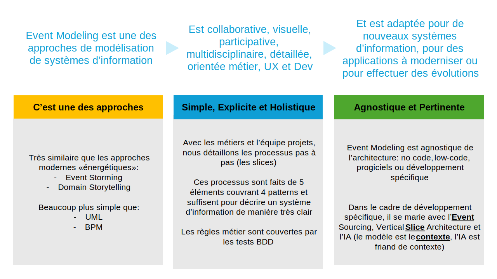
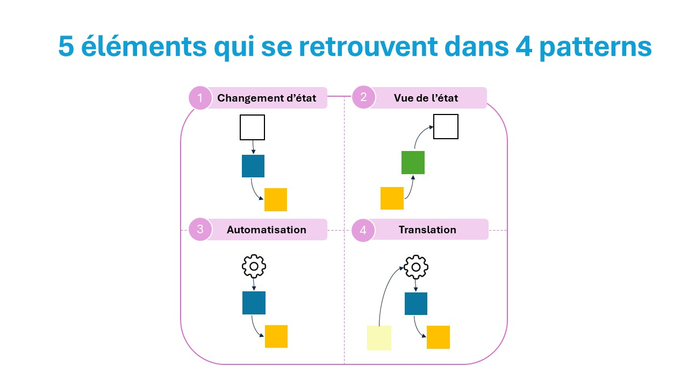
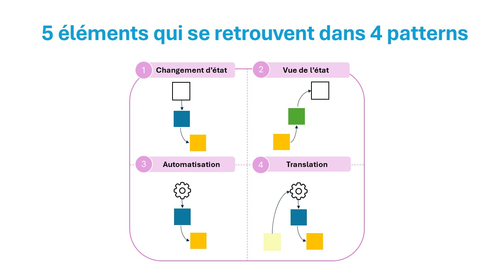

Bienvenue sur le site Event Modeling en Français
Event modeling créé par Adam Dymitruk et évangilisé par Martin Dilger
Event Modeling permet collaborativement avec les métiers et les équipes projet de modéliser un système d'information
L'objectif de ce site est de vous aider dans votre chemin vers Event Sourcing et Event Modeling.
Event Modeling (EM) est une approche de modélisation d'un système d'information...

- La toute première activité est un storming autour des évènements métier
- Puis un premier processus est choisi - de bout en bout, sans chemin alternatif
- 5 éléments suffisent à décrire un système d'information
- Un processus Event Modeling est transcrit à travers de 4 patterns fait de ces 5 éléments
- Chaque étape du processus - représentation d'un des 4 patterns - est appelée slice...
- Une slice est toujours une user story...
- Ensuite on itère par processus, chaque processus ayant entre 3 à 30+ slices (étapes)
Les forces de l'Event Modeling vont au-delà du modèle :
- Permet une implémentation utilisant Event Sourcing...
- Permet une gestion de projet simple...
- Permet une documentation vivante
- Permet d'utiliser le pattern Vertical Slice Architecture...
Et en bonus, l'IA est extrêmement efficiente car Event Modeling lui donne le contexte nécessaire à générer une application.
Premier Modèle
Un modèle très simple...
 
